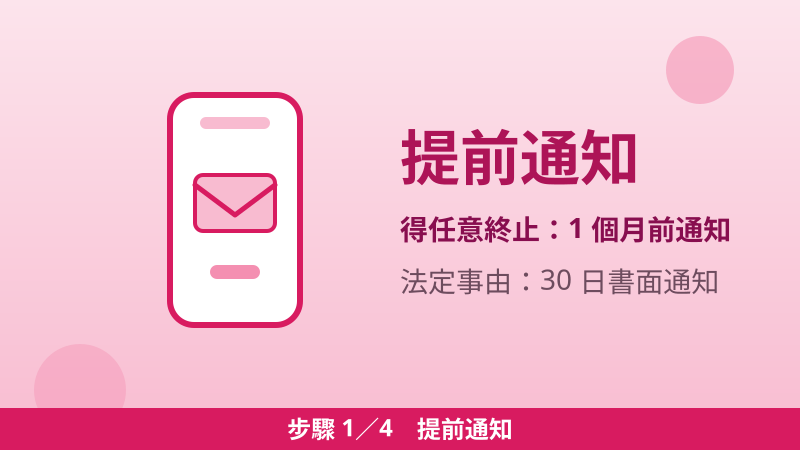
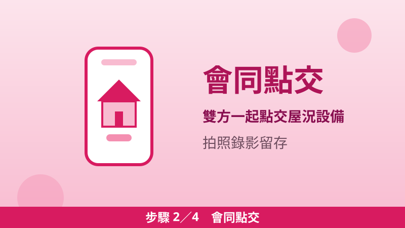
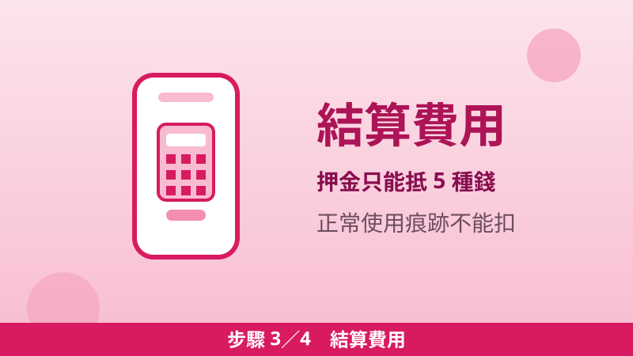
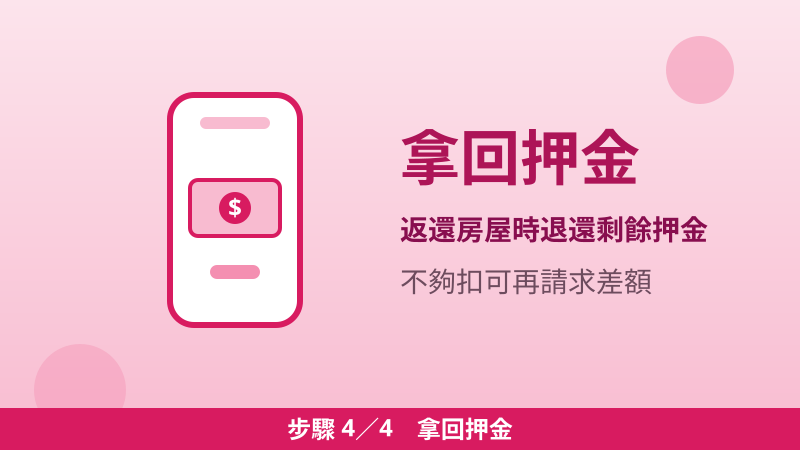

租屋押金全攻略：最多收 2 個月租金、超收可抵房租，退租 4 步驟拿回押金
租屋族最常遇到的錢坑就是押金：簽約時被多收兩、三個月，退租時又被以「清潔費」「折舊費」亂扣。法律其實寫得很清楚：押金有法定上限、能扣的項目也有限。簽約前先看懂這篇，退租時照 4 個步驟走，該拿回來的錢就拿得回來。
月租 15,000 元，押金最多 30,000 元
押金是什麼？跟租金、定金不一樣
押金是承租人為擔保租賃住宅的損害賠償責任及處理遺留物責任，預先支付的金錢（《租賃住宅市場發展及管理條例》第 3 條第 13 款）。它不是租金、也不是定金：租金是每月住的對價，押金是擔保金，租期中不能自行拿來抵租金，退租結算後才返還。
💡 押金以現金交付時，現金的利息視為租金之一部（土地法第 98 條）。
押金上限對照表：月租多少、最多收多少
| 每月租金 | 法定押金上限（2 個月） |
|---|---|
| 8,000 元 | 16,000 元 |
| 10,000 元 | 20,000 元 |
| 12,000 元 | 24,000 元 |
| 15,000 元 | 30,000 元 |
| 20,000 元 | 40,000 元 |
| 25,000 元 | 50,000 元 |
算法只有一個：每月租金 × 2。房東開口要 3 個月、4 個月押金，就是超過法定上限（《租賃住宅市場發展及管理條例》第 7 條第 1 項）。這條上限保障的是「供居住使用」的住宅租賃（同條例第 3 條第 1 款）；純營業用的店面、辦公室不在租賃條例的範圍內，押金要由雙方約定。
簽約前先看 3 件事
- 押金數字寫進契約：押金由雙方約定，但最高不得超過 2 個月租金總額，簽約時一次給付（內政部定型化契約第 5 點）。付款務必留收據或匯款紀錄，現金交付也要請房東簽收。
- 契約至少審閱 3 日：住宅租賃契約應給承租人攜回審閱，審閱期間至少 3 日（定型化契約第 1 點），而且不得約定拋棄審閱期。現場被催著簽、說「不簽就租給別人」時，先把契約帶回家看。
- 檢查 3 條紅線：租期中房東不得藉任何理由調漲租金（第 4 點）；電費以用電度數計費者，每度不得超過電費單「當期每度平均電價」（第 6 點）；契約不得記載承租人不得申請租金補貼（不得記載事項第 10 點）——寫了也無效，租金補貼照樣可以申請。
超收押金怎麼辦？超過的部分直接抵房租
已經多付了怎麼辦？土地法第 99 條寫得很明白：擔保金不得超過 2 個月房屋租金總額，已交付超過限度的部分，承租人得以超過的部分抵付房租。舉例：月租 20,000 元、房東收了 60,000 元押金，超收的 20,000 元可以直接抵 1 個月的房租，不必等到退租。主張前先以書面（LINE、簡訊、存證信函）告知房東，留下紀錄。
退租 4 步驟：照順序走，押金拿得回來

步驟 1提前通知
契約約定得任意終止，至少 1 個月前通知對方；沒通知就終止，違約金最高 1 個月租金，可從押金扣（定型化契約第 14 點）。因疾病長期療養、房屋不合居住使用等法定事由，提前 30 日書面通知即可，房東不得要求賠償（第 18 點）。

步驟 2會同點交
租賃關係消滅時，雙方共同完成屋況及附屬設備點交（《租賃住宅市場發展及管理條例》第 12 條、定型化契約第 15 點）。一方不來，經催告仍不會同，視為完成點交。點交時全程拍照、錄影留存。

步驟 3結算費用
出租人應即結算租金及相關費用（第 15 點）。押金只能抵 5 種錢：毀損賠償、欠繳租金及相關費用、遺留物處理費、提前終止違約金、逾期不搬的相當租金與違約金。依約定方法或房屋性質正常使用造成的變更或毀損，承租人不負賠償責任——正常使用痕跡不能扣。

步驟 4拿回剩餘押金
返還房屋並清償債務時，房東應返還押金或抵充後的剩餘押金（《租賃住宅市場發展及管理條例》第 7 條第 2 項）。押金不夠扣，房東可再向承租人請求差額；反過來，房東也不能以「還要再算」無限期拖延。
房東不退押金，3 條路
- 撥 1950：全國消費者服務專線，上班時間（不含午休）直撥 1950，轉接所在地縣市消費者服務中心；業者應於申訴日起 15 日內妥適處理（消費者保護法第 43 條）。
- 免費調處：向租賃地直轄市、縣（市）政府申請住宅租賃爭議調處，免繳調處費用（《租賃住宅市場發展及管理條例》第 16 條）。
- 小額訴訟：請求金額 10 萬元以下適用小額程序（民事訴訟法第 436-8 條），第一審裁判費實收 1,500 元（依司法院 114 年 1 月裁判費徵收核算對照表）。押金 2 個月最多也就幾萬元，多半落在小額訴訟範圍。
⚠️ 申訴、調解都不收費（除勘驗、鑑定費外）；提起消費訴訟不以先申訴、調解為必要，申訴進行中也可以起訴。
租屋族還可以看：租金補貼申請教學（115 年度）、116 年度租金補貼、租金補貼加碼怎麼算、租屋電費怎麼算才省。
📎 資料來源
- 全國法規資料庫《租賃住宅市場發展及管理條例》（第 3、5、7、12、16 條）：law.moj.gov.tw
- 全國法規資料庫《土地法》第 98、99 條（擔保金上限、超收抵付房租）：law.moj.gov.tw
- 行政院「住宅租賃定型化契約應記載及不得記載事項」（114 年 4 月 18 日修正，第 1、4、5、6、12、14、15、18、19 點）：ey.gov.tw
- 行政院消費者保護會「全國消費者服務專線 1950」線上申訴系統：cpc.ey.gov.tw
- 臺灣桃園地方法院「裁判費怎麼計算？」（小額訴訟 10 萬元以下、第一審裁判費）：tyd.judicial.gov.tw
最後查證日期：2026-11-17
免責聲明：本文僅供參考，不構成法律意見；個案權利義務以簽署契約與現行法規為準，必要時請洽法律專業人士。